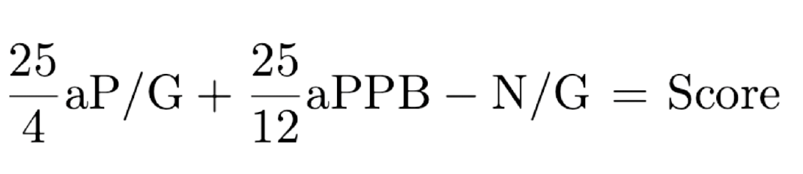

MSQBRank uses a complex methodology created by Groger Ranks. It incorporates the following three statistics:
Points Per Bonus (PPB)
Powers Per Game (P/G)
Negs Per Game (N/G)
To calculate scores, we first need to adjust the sets used. To see how we adjusted sets, and why, visit the set adjustment page. Once we adjust the PPB and P/G, we are left with adjusted points per bonus (aPPB) and adjusted powers per game (aP/G). Using those two values, we are able to determine a team's score via 